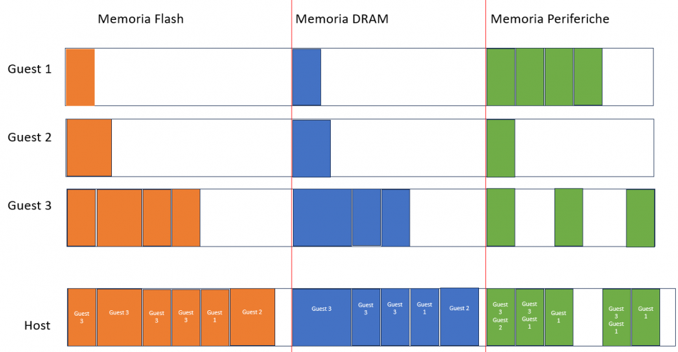
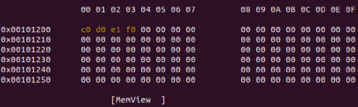
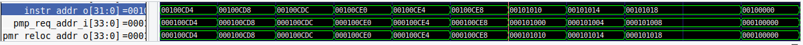

Today, Virtual Memory is a crucial aspect, especially concerning memory protection in Real-Time systems. However, introducing this feature into current systems involves significant complications. Indeed, the increasing complexity of mechanisms in multicore processors, such as prefetching, branch prediction, cache coherence, and memory virtualization, enhances average performance but diminishes predictability and complicates the certification process.
Partitioned Hypervisors attempt to address this issue through static resource allocation, yet they face problems of inefficient resource utilization and high energy consumption.
In this paper, a potential solution is proposed to enable dynamic deployment of guest systems in a virtualized environment, ensuring both isolation and efficient resource utilization.
Microcontrollers are systems that operate using physical memory. This means that there isn't an operating system performing address translation; instead, each read, write, or execution access occurs directly in physical memory.
Therefore, each microcontroller will have a specific memory map that defines where the data area, code area, and peripheral area are located within physical memory.
In this context, memory is organized by segments rather than pages because:
● Guests are bare-metal applications that can interact with sensors, perform specific computations, or function as RTOS, for which, in addition to the execution time, the memory usage is also known a priori. Therefore, dynamic memory allocation does not exist.
● Once a specific region of memory is assigned to a particular guest, it will not change because that specific guest will not request additional memory beyond what has already been allocated to it.
● Another important reason is that these systems do not employ a swapping mechanism, allowing the reduction of latencies and elimination of non-determinism.
Therefore, under these assumptions, using the paging mechanism is counterproductive, while segmentation retains all its advantages without the primary disadvantage of memory fragmentation.
The possible scenario involves a series of guests, each with its own memory map, to be executed on a host platform. When a guest, for instance, requests access to its data area, it does so based on its own memory map, which, of course, does not align with the physical memory of the host. Additionally, another problem arises: given two different guests that are not aware of each other, they present different binaries, potentially resulting in conflicts over the addresses used, as both might utilize the same addresses.
Presently, this type of virtualization is done statically by altering the physical addresses used for each guest. As the number of guests increases, this operation becomes highly complex. Furthermore, if a new guest is to be added after configuring a certain setup, it necessitates recalculating the new configuration, shutting down the host, loading the new configuration, and restarting everything. All of this diminishes the host's availability, something to be avoided in Real-Time systems.
It's imperative to consider a translation mechanism that supports dynamic deployment and automatic updating of guests running on the host without requiring a system reboot.
The microcontroller used in this research is based on the RISC-V architecture, specifically the cv32e41s microcontroller, a variant of the cv32e40s developed by Open HW.
The idea is to leverage the processor's PMP to "isolate" the guests. The PMP can be seen as a table of 64 rows where each row consists of an 8-bit configuration register specifying permissions and a 32-bit encoded address register representing the memory region to be protected. When the core generates a memory access request to perform a specific read, write, or execute operation, the PMP checks for all the necessary permissions to access that memory region. If not granted, it generates an access fault.
The goal is to add new logic, called PMR, to the PMP. PMR aims to generate, based on the input request and unless faults are detected, a relocation address, allowing a first-level translation of the virtual address to a physical address. To achieve this, an offset register is added to each row of the PMP. This allows guest requests to be relocated by simply adding the offset value to the guest's request address.
Three possible encodings for the offset are proposed: 32, 5 and 8 bit.
In the case of 32-bit encoding, a register with a 32-bit offset will be created. The 32-bit offset provides great flexibility, allowing movement throughout memory with bit-level granularity. However, it introduces greater complexity and overhead. Managing 32-bit offsets requires more hardware and software resources, potentially causing increased memory access times and performance issues.
For the 5-bit encoding, a 5-bit offset register will be created. This encoding allows movement in memory in powers of 2. Using only 5 bits significantly reduces the hardware and software resources utilized, but it results in less flexibility and increased memory fragmentation.
In the case of 8-bit encoding, an 8-bit offset register will be created, aiming to strike a balance between the 5-bit and 32-bit encodings. The initial 5 bits allow movement in powers of 2 in memory, similar to the 5-bit encoding, identifying an initial displacement. The remaining 3 bits allow finer-grained movement from the initial displacement. This approach provides more flexibility than the 5-bit encoding without using excessive hardware and software resources like the 32-bit encoding.
Each encoding includes a sign bit that allows movement in memory in both directions. This bit is included in the 32 bits for the 32-bit encoding but excluded in the 8-bit and 5-bit encodings. The ideal offset choice will depend on the configuration, characteristics of the applications being executed, and the overall performance and security requirements within the virtualization context.
Guest 1 - Bare Metal Guest: The binary enters the flash memory, only a small portion of DRAM is used, and the peripherals are contiguous.
Guest 2 - Larger Bare Metal Guest performing computations and sending information to a peripheral.
Guest 3 - Guest OS supporting 2 tasks allocated contiguously.
The figures display the memory maps of the three guests and a possible memory map of the host, which results in the choice of a linear 32-bit offset.
The following describes how the PMR (Physical Memory Relocation) was implemented and integrated within the core under study, presenting the modifications made to each module.
The Package is a module used to define objects and structures shared by all modules comprising the SOC (System on Chip). It allows for a centralized definition of resources utilized across all project components.
Here, the registers related to the PMR have been defined, including:
● A configuration register comprising an Enable field defining the implementation type (Tabular, Tree, Mixed) and an Encoding field specifying the offset encoding type (32, 5, 8 bits).
● 64 offset registers, one for each row in the PMP (Physical Memory Protection).
Additionally, addresses for these registers have been defined, searching the documentation for available addresses for custom implementations. Addresses in the range of 0xBC0-0xBFF and 0x7C0-0x7C4 were selected.
Firstly, the interface of the PMP module was updated, adding the output pmr_reloc_addr_o, representing the relocation address. Following the "region matching" phase, where the PMP verifies if the address to be accessed falls within one of the "protected" regions, logic for calculating the relocation address based on the chosen offset encoding was added. Below is the code illustrating the calculation of the relocation address with encodings of 32, 5, and 8 bits.
The CS Registers module is responsible for managing the registers and specific configurations of the microcontroller used. Thus, in this module, all operations (read, write) used for the base SOC registers were extended to the registers added in the package, namely those of the PMR (offset and configuration registers). To achieve this, the same logic used for reading and writing the base registers was applied to the PMR registers. For both reading and writing registers, there is an initial phase to enable these operations. From a coding perspective, this is implemented through a switch-case where, based on the register on which the operation is to be performed, the enabling bit is raised.
The goal is to trace the path that a potential guest request takes within the SOC, to determine where in the SOC to integrate the new output of the PMP for relocating potential memory accesses. This starts with load and store operations implemented in the LSU (Load/Store Unit). The LSU receives a load/store request for a specific address from the core. This request arrives at the MPU (Memory Protection Unit), where the PMP and, consequently, the PMR are located. Following the modifications, the PMP together with the PMR not only performs access control but also relocation functions, providing the output with the new memory access address. In the MPU module, the relocation address is assigned to the address field of the output bus_trans_o, connected as input to the lsu_response_filter module, and then passes through the write_buffer and data_obi_interface modules, generating the lsu output, c_obi_data_if_ma_o, used by the core to access memory. A similar process is followed for the Instruction Fetch phase. The changes made to the MPU are detailed below.
Verilator and GTKWave are the software used to simulate the core and provide a visualization of the waveforms of various signals. An assembly testbench has been written to verify the correct functioning of the PMR relocation. During the test, three memory regions were protected by writing to the registers of the PMP and PMR, namely:
Region 0 - Area allowing all operations (Read, Write, Execute) representing the host management memory area. In this region, the offset is set to 0, thus no relocation is expected.
Region 1 - A region of physical memory for guest code, therefore executable only. In this region, address relocation is expected with an offset of 0x00000010.
Region 2 - A region of virtual memory for the guest's data area, defining read and write permissions. For virtual addresses falling within this region, relocation to physical addresses of the host memory is expected.
Subsequently, a store request is made at the virtual address 0x03000000, falling within Region 2, and a jump to the physical address 0x00101000, which is within Region 1.
Through the PMR logic, both requests are correctly relocated to specific memory areas.
The figure below illustrates how the store request made of "f0 e1 d0 c0" at the virtual address 0x03000000 is, via the PMR, relocated to the physical address 0x00101200 in memory.

Using GTKWave, it can be observed how the jump operation to address 0x00101000 is correctly relocated to the address 0x00101010, calculated by the PMR.

© 2023 - Project developed for the Embedded Systems exam at the University of Naples, Federico II.
Maurizio Gaudino